library(spatPatClassifyR)
# Set seed for reproducibility
set.seed(123456)This vignette shows how to generate artificial landscapes with different spatial patterns. These landscapes are designed for training and testing spatial pattern classifiers. For details on how to use the generated landscapes for training classifiers, see the classify-metrics and classify-pixels vignettes.
Overview
You can:
- Generate batches of training landscapes with
create_training_landscapes() - Create individual landscapes with custom parameters using
create_landscape() - Visualize an individual landscape with `plot_landscape()
- Visualize multiple landscapes in a grid with
plot_landscape_list()
Available patterns
There are 11 different spatial patterns available:
Control patterns
- random: Randomly distributed vegetation
- bare: No/minimal vegetation (control)
- dense: Complete/maximal vegetation cover (control)
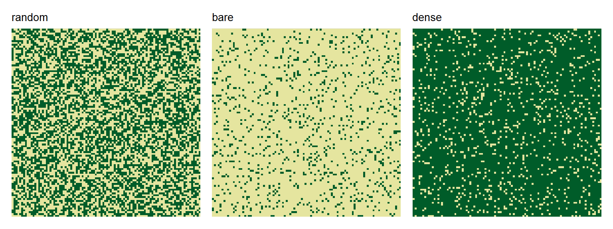
Ecotone patterns
- sharp: Sharp boundary
- diffuse: Gradual transition
- fingers: Curvy, finger-like extensions
- clustered: Vegetation clusters above a treeline
- bands: Sinusoidal vegetation bands
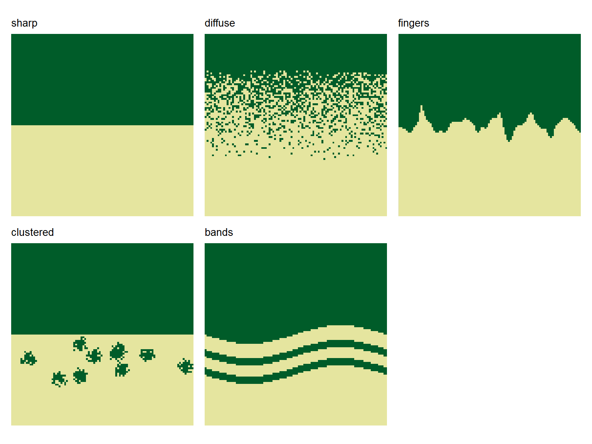
Patch patterns
- spots: Circular vegetation patches
- gaps: Circular vegetation gaps
- labyrinth: Maze-like vegetation patterns
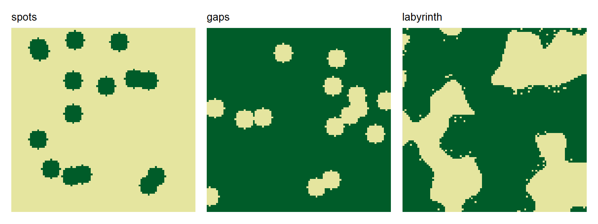
For detailed parameter descriptions and examples of each pattern type, see ?create_landscape.
Creating Multiple Training Landscapes
The quickest way to generate training data is with create_training_landscapes(). It generates multiple landscapes balanced across all available patterns.
# Create 20 landscapes balanced across all pattern types
landscapes <- create_training_landscapes(n = 20)
#> ✔ Successfully generated all 20 training landscapesThe landscapes are returned as a list of landscape objects (see below for more info on the data structure).
They can be visualized using the plot_landscape_list() function:
# Plot all landscapes
plot_landscape_list(landscapes)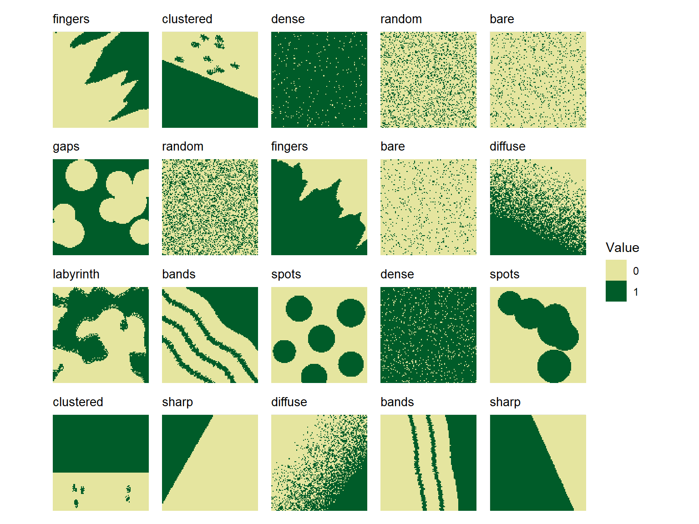
By default, landscapes are created in a balanced way, so that each pattern type is represented equally in the generated set.
Selecting Specific Patterns
Specific patterns can be selected to create only a subset of patterns using the patterns argument. For example, to create landscapes with only labyrinth, spots, and clustered patterns:
# Generate only specific patterns
landscapes <- create_training_landscapes(
n = 12,
patterns = c("labyrinth", "spots", "clustered")
)
#> ✔ Successfully generated all 12 training landscapes
plot_landscape_list(landscapes)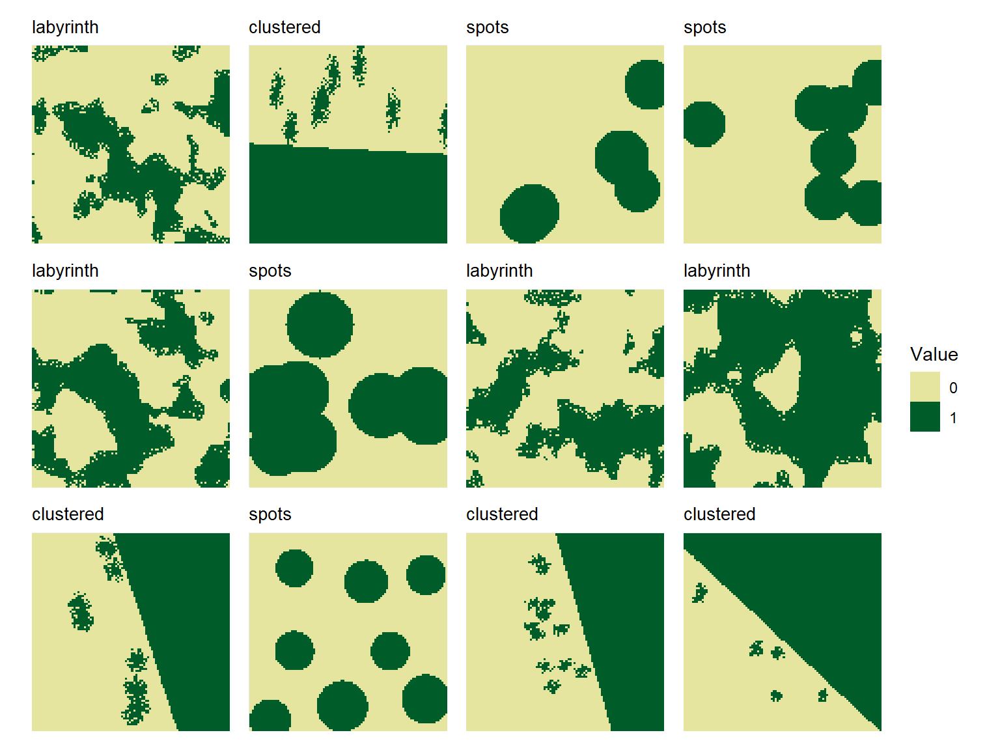
Control landscape parameters
Landscape size
To modify the size (number of pixels in x- and y-direction) of all generated landscapes, use the ncol and nrow arguments. By default, landscapes are created with a size of 100x100 pixels.
non_square <- create_training_landscapes(
n = 3,
width = 50,
height = 20
)
#> ✔ Successfully generated all 3 training landscapes
# Plot landscapes with custom size
plot_landscape_list(non_square)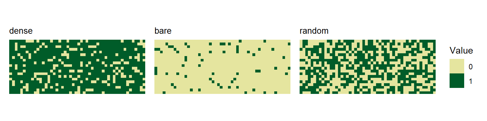
Landscape rotation
By default, landscapes are rotated by angles randomly chosen between 0 and 360 degrees. This ensures that classifiers trained on these landscapes are invariant to landscape orientation.
You can disable random rotation by setting the add_rotation parameter to FALSE.
You can also control used rotation angles directly using rotation_angles.
no_rotation <- create_training_landscapes(
n = 3,
patterns = c("clustered", "sharp", "bands"),
add_rotation = FALSE
)
defined_angles <- create_training_landscapes(
n = 3,
patterns = "clustered",
rotation_angles = c(45, 90)
)
plot_landscape_list(c(no_rotation, defined_angles))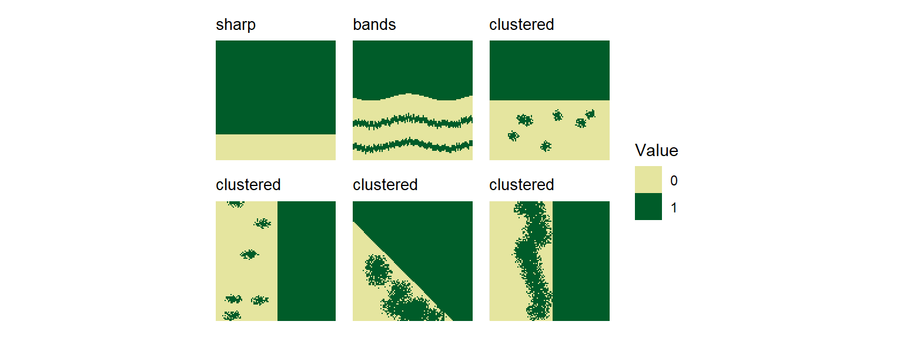
Pattern-specific parameters
You can modify default parameters for all generated landscapes of a specific pattern by passing a list of parameter values to the params_list argument. For example, to create landscapes with more spots of larger size:
# Custom parameters for spot patterns
pattern_params <- list(
spots = list(
n_spots = 15,
spot_radius = 10,
spot_radius_sd = 3
)
)
bigger_spots <- create_training_landscapes(
n = 12,
patterns = "spots",
params_list = pattern_params
)
plot_landscape_list(bigger_spots)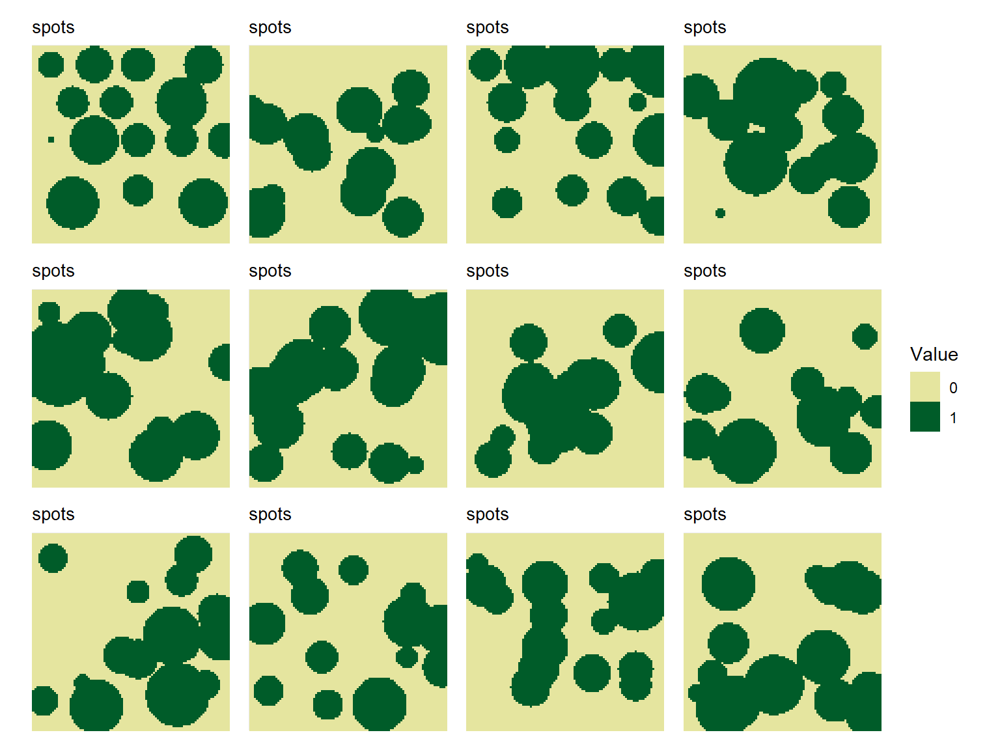
To check parameter names and default values for each pattern type, see the function help create_landscape().
Creating Single Landscapes
To create single landscapes of all patterns with specific parameters, use the create_landscape() function. Check the help page ?create_landscape for a full list of available parameters for each pattern type.
Spot Patterns
# Default spots
spots_default <- create_landscape("spots", name = "Default")
# More spots with size variation
spots_many <- create_landscape(
"spots",
name = "Many variable spots",
n_spots = 15,
spot_radius = 8,
spot_radius_sd = 2
)
# Regular grid of spots
spots_regular <- create_landscape(
"spots",
name = "Regular grid",
n_spots = 15,
spot_radius = 20,
spot_radius_sd = 0,
regular_spots = TRUE
)
#> Warning: Regular spot placement requested 15 spots but only ~6 positions fit.
#> ℹ Adjusting to maximum feasible spots. Consider decreasing `spot_radius`.
plot_landscape_list(
list(spots_default, spots_many, spots_regular),
titles = "name"
)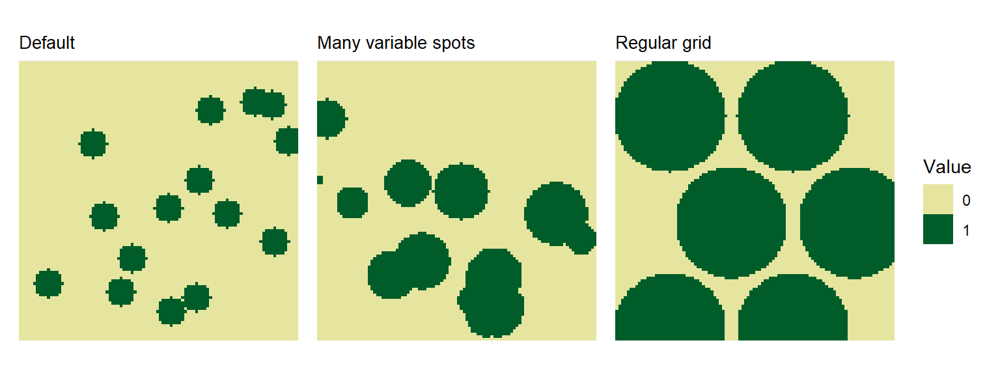
Clustered Patterns
# Few large clusters
clustered_large <- create_landscape(
"clustered",
name = "Few large clusters",
n_clusters = 5,
cluster_radius = 12,
scatter_zone_prop = 0.5
)
# Many small clusters
clustered_small <- create_landscape(
"clustered",
name = "Many small clusters",
n_clusters = 30,
cluster_radius = 2,
scatter_zone_prop = 0.6
)
# Elongated clusters
clustered_horizontal <- create_landscape(
"clustered",
name = "Horizontal clusters",
n_clusters = 15,
cluster_radius = 5,
elongation_x = 3,
elongation_y = 1,
scatter_zone_prop = 0.4
)
plot_landscape_list(
list(
clustered_large,
clustered_small,
clustered_horizontal
),
titles = "name"
)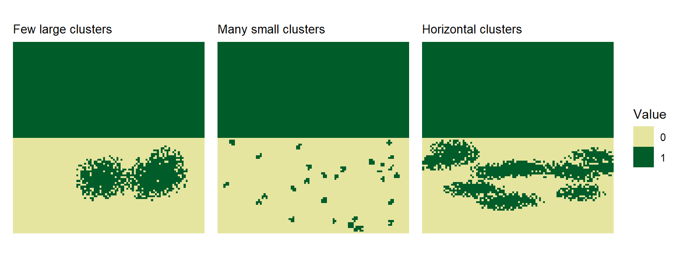
Labyrinth Patterns
# Default labyrinth
labyrinth_default <- create_landscape("labyrinth", name = "Default")
# Higher frequency with multiple octaves
labyrinth_complex <- create_landscape(
"labyrinth",
name = "Complex",
frequency = 8,
octaves = 3,
band_fuzziness = 0.05
)
plot_landscape_list(list(labyrinth_default, labyrinth_complex), titles = "name")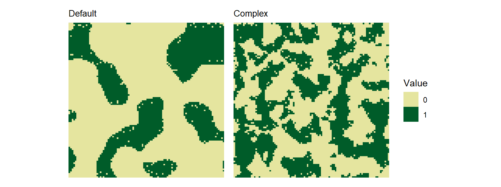
The landscape Object
In spatPatClassifyR, landscapes are stored as lists containing the landscape data and metadata. All landscape generation functions return landscapes in this format and all other functions expect landscapes to be provided in this format.
To learn how to transform your own raster data into this format, see vignette on importing landscapes.
Each landscapes is stored as a list with the following components:
- data: The landscape object as a
SpatRasterclass - pattern: Pattern type (e.g., “spots”, “clustered”)
- name: User-defined name
- params: List of parameters used to generate the landscape
landscape_example <- create_landscape("spots", name = "Example")
str(landscape_example)
#> List of 4
#> $ data :S4 class 'SpatRaster' [package "terra"]
#> $ pattern: chr "spots"
#> $ name : chr "Example"
#> $ params :List of 9
#> ..$ width : num 100
#> ..$ height : num 100
#> ..$ invert_landscape : logi FALSE
#> ..$ n_spots : int 15
#> ..$ spot_radius : num 5
#> ..$ spot_radius_sd : num 0
#> ..$ radius_noise_fraction: num 0
#> ..$ regular_spots : logi FALSE
#> ..$ rotation : num 0
#> - attr(*, "class")= chr "landscape"Modifying Landscape Metadata
Users can modify landscape metadata using the helper functions set_landscape_pattern() and set_landscape_name(). For example, to change the pattern label or name of existing landscapes:
landscapes_example <- set_landscape_name(
landscape_example,
"New Landscape Name"
)
landscapes_example <- set_landscape_pattern(
landscapes_example,
"custom_pattern"
)
landscapes_example
#> Landscape: "New Landscape Name" [ pattern: custom_pattern ]
#> -----------------------------------------
#> Dimensions: 100x100 (10000 cells)
#> Resolution: 1.0x1.0
#> Extent : xmin=0.0, xmax=100.0, ymin=0.0, ymax=100.0
#> Values : min=0.0, max=1.0
#> Parameters: width = 100, height = 100, invert_landscape = FALSE, n_spots = 15, spot_radius = 5, spot_radius_sd = 0, radius_noise_fraction = 0, regular_spots = FALSE, rotation = 0Next Steps
- See
vignette("landscape-metrics")for extracting landscape features and finding the most informative metrics - See
vignette("classify-metrics")for training spatial pattern classifiers on the landscape metrics - see
vignette("classify-pixels")for training spatial pattern classifiers on the raw landscape data using keras